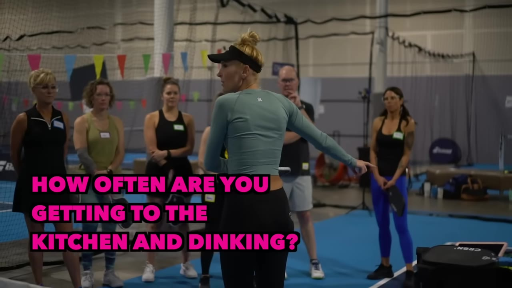
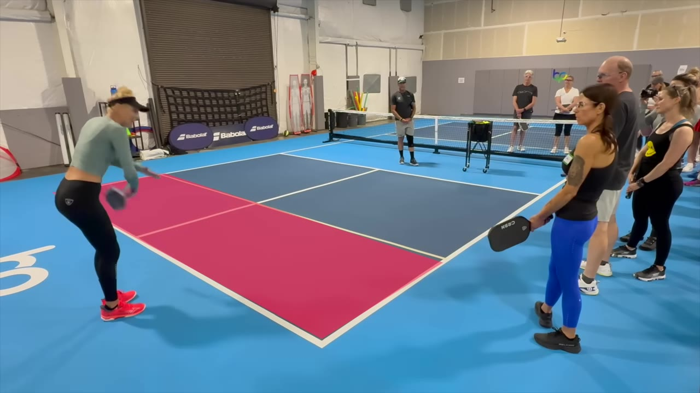
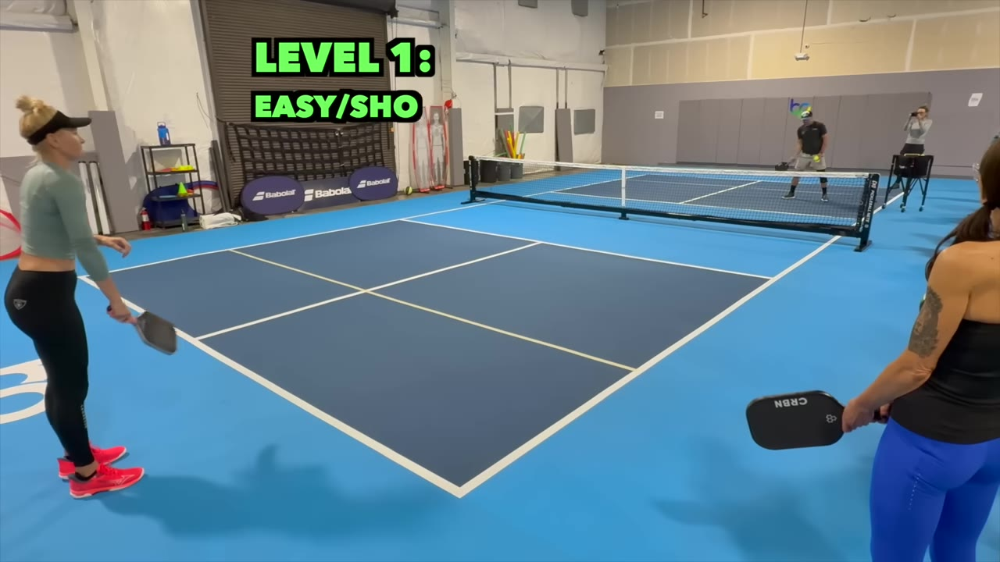
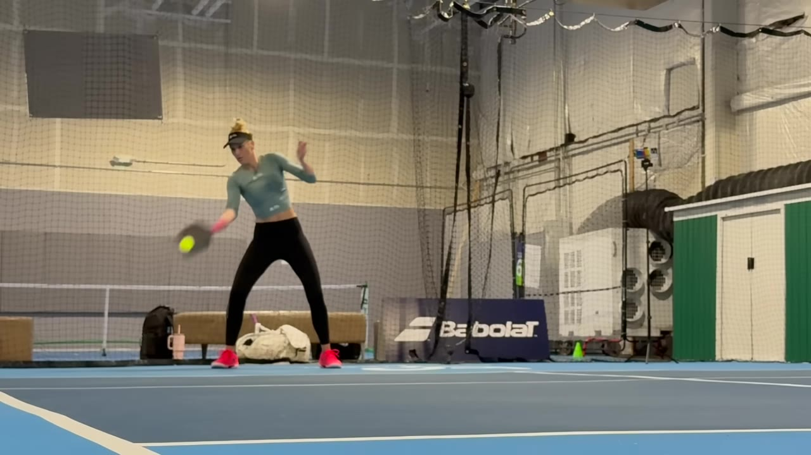

Professionals reach the kitchen line 70–80% of the time after serving. Amateurs guess 20–30%. That gap — and what to do about it — is the entire difference between a 3.5 and a 4.5.
Watch on YouTubeJill opens by asking the group: when you serve, your partner hits the third shot, you both get to the kitchen, and a dinking rally follows — what percentage of the time does that actually happen? The amateurs in the group guess 20–30%. The real answer for pros? 70–80%.
"That's why I'm not focusing really hard on dinking today — is it even happening for you guys greater than 25% of the time?"
If most games at your level never reach the dink battle, then the first four shots determine everything.

The critical area for the third/fifth shot player is the space between the white baseline tape and the kitchen line — Jill calls it the "zone of death." If you're meeting the ball from here, you're either hitting out or trying to speed up from way too far away.
"I want you to treat the baseline like it's a kitchen line. Like you would never be hitting a ball from here. That's bad footwork. That's bad hygiene."
The new rule: before you move forward, analyze the return. If it lands short (inside the zone of death), you can attack. If it lands past it — stay back and stall.

When the return doesn't make it past the baseline tape, the drill is straightforward: get on top of the ball, split step, settle, and go.
The two timing cues Jill drills into her students:
The pattern that everyone gets wrong: run → wait → run through. The right pattern is: run → stop → reset → go.
"If you're focused on splitting when he's making contact, it's too late. We have to tell ourselves a second before then it's timed."
The difference between a 3.5 and a 4.5 at this stage isn't the shot — it's the footwork. Lower-level players bang from the zone of death and hope. Advanced players get past it as a team, then decide what to hit.

When the return is deep — into the zone of death — the old "return and run" playbook is obsolete. Modern paddle technology has made deep returns reliable, and getting caught at the baseline is "too punitive."
The answer is a 60% speed line drive — a survival shot that buys you time to get behind the ball at the kitchen line. It's not trying to win the point. It's trying to get to the position where you can win the point.
"When you remove that pressure from yourself and tell yourself, this drive is to survive — then it's like the pressure vanishes."
Once the return finally lands short, you go back to Level 1. The pressure of having to "win" the drive disappears when you reframe it: nine out of ten drives in means seven out of ten points won from the kitchen.
